Первой что нам надо сделать, это зайти на сайт создателя слайдера, нажать get it now и скачать архив с исходниками. Внутри архива нам нужна папка папка slick (не slick-1.8.1, а именно slick). Эту папку мы закидываем в папку с проектом.
Теперь необходимо подготовить разметку.
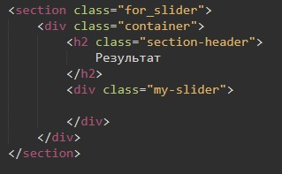сначала мы готовим секцию. В этой секции будет контайнер div. Этот контейнер содержит заголовок h2 и блок со слайдером.
Теперь внутрь блока с классом my-slider мы должны добавить то количество блоков, сколько у нас будет слайдов. Этот блок будет иметь класс - .slider-block. Допустим у нас 4 слайда, значит надо сделать 4 блока. Каждый блок будет содержать заголовок, картинку и небольшой текст. Значит, 1 блок будет выглядеть так:
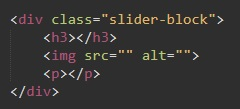Вся же разметка выглядит вот так:
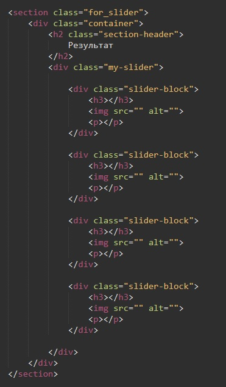После того как все разделы заполнили (вписали заголовки, тексты и указали картинки) подключаем наш слайдер
Подключается он в несколько этапов.
Первое - надо подключить стили slik slider. Подключаем все перед закрывающим тегом body. Сами файлы стилей находятся в папке slick, которую мы добавили вначале. Здесь нам надо подключить два файла: slick.css и slick-theme.css
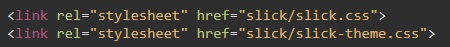Второе - подключаем сам слайдер, это файл slick.min.js
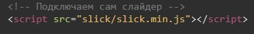Третье - инициализируем сам слайдер. Для этого под подключенными библиотеками и стилями пишем тег script и внутрь него помещаем код:
Вместо .your-class - мы вписываем имя класса блока со слайдером. У меня это my-slider. Строчку setting-name: setting-value просто удаляем.
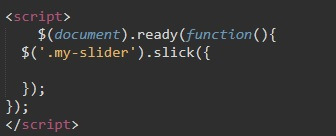Все наш слайдер подключен. Теперь мы можем его конфигурировать. Вся конфигурация помещается в массив входящим параметром в функцию slick
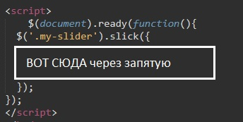Задача: сделать так, что бы при широков экране отображались все 4 слайда и прокручивать было бы нечего, при среднем экране (планшет) отображалось 2 слайда и при прокруте показывались остальные 2, и наконец при просмотре с мобильного устройства, будет показываться 1 слайд и прокрутка будет по одному слайду.
Первое что надо сделать это добавить вот такие значения в наш скрипт:
Что это означает:
Выглядит теперь это вот так:
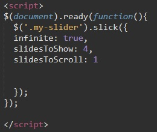Теперь добавим адапливности. За адаптивность отвечает такое свойство в Slick как responsive
В нашем скрипте ставим запятую после последнего свойства и вставляем такой код:
Как мы видим тут три блока, каждый отвечает за отображение слайдов в зависимости от ширины экрана, здесь указано 1024, 600 и 480. Меняем ширину экрана на наши значения и указываем сколько слайдов будет когда показывать и по сколько слайдев будет скролится. У меня это выглядело так:
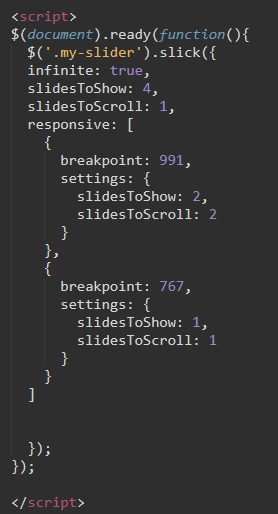Все. теперь немного постилизуем что бы все выглядело ровно.
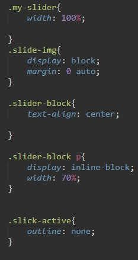my-slider
.slide-img - стилизуем картинки в слайде
.slider-block - на этом участке мы говорим что текст у блочных элементов будет выравниваться по центру, таким образом наши заголовки и текты встанут по центру
.slider-block p - задаем стили для параграфа который внутри блока слайдера
.slick-active - в этом разделе мы отключаем обводку у слайдов
В самом слайдере уже предусмотрены кнопки прокрутки, но чаще всего эти кнопки нам не подойдут так как в макете будут указаны свои кнопки прокрутки. Как нам добавить свои.
Первое что надо сделать это добавить в наш скрипт тег button и дать ему свой класс:
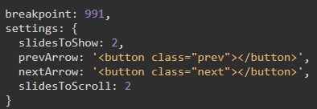prevArrow: - это кнопка влево
nextArrow: - это кнопка вправо
Теперь рассмотрим стили для этих классов
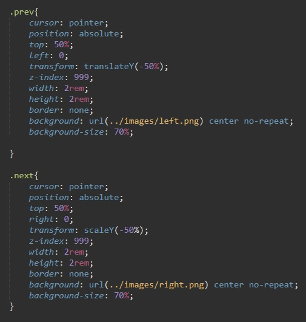Стилизация второй кнопки аналогичная, за исключанием что параметр не left а right и путь к картинке другой.
Пример
Код JavaScript:
Здесь обязатыльным условием то, что мы задаем свойство centerMode: true, - обязательно то что бы в слайдере выводилось нечетное количество слайдов (в нашем случае это - 3)
Так же выставляем свойство - centerPadding:
Теперь что надо сделать, что бы центральный слайд увеличивался в размерах? для этого мы задаем дополнительные стили классу - .slick-center и .slick-list. Эти классы создает сам slick слайдер. Выглядеть это будет так:
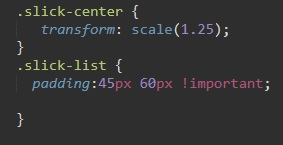За это отвечает свойство variableWidth, значение выставляет true и ширина слайдов будет такая которую мы укажем в верстке.